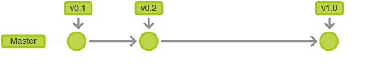

Git Flow

Introduction
In out jcwebdev workfolow, we only have one master branch as our working space. And the master (branch) working space can access by public. Therefore it will make the issue of conflicts, pull error and push error. The most problem is the conflicts as the out come. Producer and designer do not have enough knowledge to complate code marge. Then the program been broken and unable to run. Git workflow slims like Hong Kong Railway. One train line as one branch. what is git
Suggest workflow
I would like to suggent the normal and most comment workflow in this case. As the normail git workflow. It will include five different branches.- Master branch
- Develop branch
- Feature branch
- Releace branch
- hotfix branch
Feature Branch
Feature Breach is an new workspace between producer, designer and developer. For example I would like to create a new station call Sai Ying Pun. What if Sai Ying Pun station is not exist at 2010. As we are the architect of Sai Ying Pun Station. We need to go to Sai Ying Pun area to dig an big whole. This action in means create a new feature brench.
As the big whole was finish digging. The satation also not complate. The train still cannot go though this station. Therefore as we are the architect, we must decoration and erection of rails. This action it mean development inside the feature branch.